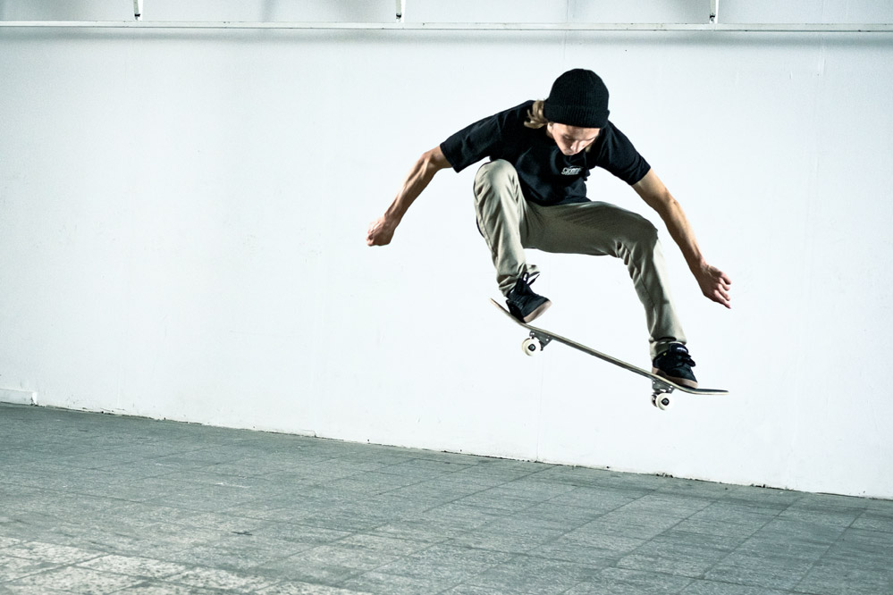

BEN DILLINGER / OLLIEPHOTO: SKATEDELUXE ↗
FROM
PUSH
TO POP.
PUSH
TO POP.
GET OUT.
GET ON.
GO AGAIN.
滑板动作档案 / 从初级到中级↓GET ON.
GO AGAIN.
YOUR NEXT SESSION / 你当前的阶段先滑顺。
先滑顺。
再玩花的。
SESSION NOTES
已经能前进滑行、慢转弯和翘头转向。
下一步，把左转与流畅上板补起来。
01 确认脚刹02 补左转03 双向翘头转向04 放板上板
悬停读说明，点击看重点。23 张真实影像 / 5 项待补
这里还没有动作。试试其他关键词，或用 ★ 关注一个动作。
不必把所有动作
都练成，才算滑板。
下次到场，选一个任务。看一次示范，自己做几次，再改一点。
回到动作档案 ↑